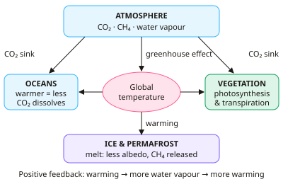

A-level Geography Year 12 · Topic 5
Water, carbon and climate: interactions and sustainability
Water, carbon and climate looks at how the water and carbon cycles interact with the global climate.
We will study the links and feedbacks between the cycles, and a tropical rainforest case study.
Then we examine the oceans as a carbon store and ocean acidification, and ways to manage the cycles and climate change.
- 5 subtopics
- 244 questions
- Free: 5.1 notes and 10 questions
In this topic
- 5.1Links between the water and carbon cycles and the global climateFree below · 75 questions
- 5.2Tropical rainforest case study: water and carbon stores, flows and human impactsOpen in Full Marks · 35 questions
- 5.3Ocean acidification and the oceans as a carbon storeOpen in Full Marks · 34 questions
- 5.4Managing the cycles: climate change mitigation, adaptation and carbon sequestrationOpen in Full Marks · 77 questions
- 5.5Arctic tundra case study: water and carbon stores, permafrost and human impactsOpen in Full Marks · 23 questions
5.1 · Free notes
Links between the water and carbon cycles and the global climate

Key points
- The global water cycle and carbon cycle are closed systems: matter does not enter or leave the Earth. Smaller units such as a drainage basin or a forest are open systems. Both cycles are driven by solar energy and share stores in the atmosphere, oceans, biosphere and cryosphere.
- The natural greenhouse effect keeps the mean surface temperature at about +15°C, instead of about −18°C. The enhanced greenhouse effect comes from burning fossil fuels and deforestation, which have raised CO₂ from about 280 ppm (pre-industrial) to over 420 ppm.
- Water vapour is the most abundant greenhouse gas, but its amount is set by temperature, so it acts as a feedback, not a forcing. Warmer air holds about 7% more vapour per 1°C (Clausius–Clapeyron), which amplifies warming caused by CO₂.
- Photosynthesis (6CO₂ + 6H₂O → C₆H₁₂O₆ + 6O₂) and respiration (the reverse) link the cycles. Open stomata let CO₂ in and lose water vapour by transpiration, so drought closes stomata and cuts carbon uptake.
- A positive feedback amplifies change. Examples are: ice melt lowering albedo, permafrost thawing and releasing CH₄ and CO₂, warmer oceans dissolving less CO₂, and drought, fire and dieback turning forests into carbon sources.
- A negative feedback dampens change. An example is CO₂ fertilisation, where more CO₂ boosts plant growth and carbon storage; its effect is limited by water and nutrient supply. Examiners expect you to state the direction of each feedback in a clear chain of cause and effect.
- The oceans absorb about a quarter of human CO₂ emissions. CO₂ solubility falls as water warms, so a warming ocean weakens this sink. Oceans also supply most evaporation, so sea-surface temperature controls atmospheric moisture and rainfall patterns.
- Climate change intensifies the water cycle: more evaporation, heavier rainfall events, melting ice and sea-level rise (partly from thermal expansion). Changed rainfall alters soil moisture and vegetation, which changes carbon uptake in turn.
- Deforestation links both cycles. It cuts evapotranspiration and cloud formation, and it removes biomass carbon and releases CO₂ when forest is burnt. The combined effect is regional drying and higher atmospheric CO₂.
- Tipping points are thresholds beyond which change becomes self-reinforcing and hard to reverse, for example Amazon dieback or large-scale permafrost thaw. Responses include mitigation (cutting emissions, protecting forests and peatlands, as in the Paris Agreement aim of limiting warming to 1.5°C) and adaptation.
In more detail
- Natural greenhouse effect: keeps Earth's average surface temperature at about 15 °C instead of about −18 °C.
- Water vapour feedback: a warmer atmosphere holds more water vapour, itself a greenhouse gas, which adds to the warming.
- Clouds: low clouds tend to cool the planet by reflecting sunlight, while high, thin cirrus tends to warm it by trapping heat.
- The oceans: absorb about a quarter of human CO₂ emissions and over 90% of the extra heat trapped by greenhouse gases.
- Tipping points: scientists watch the Greenland ice sheet, the Atlantic overturning circulation, the Amazon and permafrost.
Practice
Links between the water and carbon cycles and the global climate: 10 questions
Pick an answer to check it, or open the answer for the explanation.
1. Which greenhouse gas is the most abundant in the atmosphere by volume?
- Carbon dioxide
- Water vapour
- Methane
- Nitrous oxide
Show answer
B: Water vapour. Water vapour (up to about 4% of air) far exceeds CO₂ (about 0.04%). Its amount is controlled by air temperature, so it acts as a feedback rather than a primary forcing.
2. Which sequence correctly describes the water vapour feedback in global warming?
- Warming → more evaporation → more vapour → cooling
- Warming → more evaporation → more water vapour → more warming
- Warming → more rainfall → less vapour → more warming
- Warming → less evaporation → less vapour → cooling
Show answer
B: Warming → more evaporation → more water vapour → more warming. Warmer air and oceans increase evaporation. More water vapour, a greenhouse gas, traps more heat. Warming is amplified, so this is a positive feedback.
3. How does the opening of stomata link the water and carbon cycles in a leaf?
- Only water vapour passes through stomata; CO₂ enters via roots
- CO₂ enters for photosynthesis while water vapour is lost by transpiration
- Stomata store carbon until the leaf is shed
- Water enters through stomata and CO₂ leaves as a by-product
Show answer
B: CO₂ enters for photosynthesis while water vapour is lost by transpiration. Stomata allow CO₂ in for photosynthesis, but water vapour escapes by transpiration. Closing them in drought saves water but reduces carbon uptake.
4. Air can hold about 7% more water vapour per 1°C of warming. Air holding 15.0 g/m³ warms by 1°C. What can it now hold?
- 15.1 g/m³
- 22.0 g/m³
- 16.1 g/m³
- 105 g/m³
Show answer
C: 16.1 g/m³. 7% of 15.0 is 1.05, so 15.0 + 1.05 = 16.05, which is about 16.1 g/m³. This extra vapour strengthens the greenhouse effect.
5. Why does ocean warming weaken the ocean's role as a carbon sink?
- Warmer water dissolves more CO₂, which then evaporates
- Warmer water is denser, so more CO₂ sinks
- Warmer water kills all phytoplankton immediately
- Warmer water dissolves less CO₂, so more remains in the atmosphere
Show answer
D: Warmer water dissolves less CO₂, so more remains in the atmosphere. Gas solubility falls as temperature rises. Less CO₂ is absorbed, so more stays in the air and enhances warming: a positive feedback.
6. Large-scale deforestation of the Amazon is most likely to have which combined effect?
- Less transpiration but more carbon stored
- More transpiration and more carbon stored
- Less transpiration and less carbon stored
- More transpiration but less carbon stored
Show answer
C: Less transpiration and less carbon stored. Removing trees reduces evapotranspiration (less moisture recycled) and cuts the biomass carbon store. Burning or decay releases CO₂ to the atmosphere.
7. Without the natural greenhouse effect, Earth's mean surface temperature would be approximately:
- −18°C
- −50°C
- 0°C
- +15°C
Show answer
A: −18°C. The natural greenhouse effect warms Earth from about −18°C to the present mean of about +15°C, a difference of around 33°C.
8. Why does melting Arctic sea ice act as a positive feedback?
- Ice reflects less energy because it becomes thicker
- Melting ice absorbs CO₂ from the air
- Meltwater cools the ocean, so more ice forms
- Dark open water absorbs more solar radiation than reflective ice, causing further warming
Show answer
D: Dark open water absorbs more solar radiation than reflective ice, causing further warming. Ice has a high albedo, while open ocean has a low albedo. Losing ice means more absorbed energy, more warming and more melting, so the change is amplified.
9. Atmospheric CO₂ rose from about 280 ppm (pre-industrial) to about 420 ppm. What is the percentage increase?
- 50%
- 140%
- 33%
- 67%
Show answer
A: 50%. (420 − 280) ÷ 280 × 100 = 50%. Always divide by the original value when calculating a percentage change.
10. Which statement about the global water and carbon cycles is correct?
- Both are open systems because solar energy enters
- Both are closed systems globally, though forests and drainage basins are open
- The water cycle is closed but the carbon cycle is open
- Both are closed, so humans cannot change store sizes
Show answer
B: Both are closed systems globally, though forests and drainage basins are open. Matter is essentially not exchanged with space, so both cycles are closed globally. Smaller units exchange matter and are open. Humans can still shift carbon and water between stores.
Keep going in Full Marks
Full Marks has 75 questions on Links between the water and carbon cycles and the global climate (65 more than here), set out in practice levels. You also get notes and 3D models for all 5 subtopics of Water, carbon and climate: interactions and sustainability, plus games, timed exams and past papers.
On your exam board
Not in the Edexcel and Cambridge specifications.